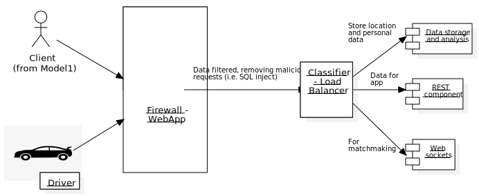

Members:
- Sebastian Romero (00216765)
- Esteban Alvarado (00215138)
- Gabriel Pastor (00211253)
- Guillermo Cisneros (00206286)
- Gabriel Lara (00215784)
Block Diagram of the System Components

Requirements and Functionality
Customers
- Ride Request: Input pickup and destination locations to request a ride. The system notifies nearby drivers of the request, allowing them to accept the ride.
- Real-Time Tracking: Once a driver accepts the ride, track their current location in real-time.
- Driver Communication: Facilitate communication with the driver for coordination or specific instructions as needed.
Drivers
- Ride Requests: Accept or decline customer ride requests.
- Navigation: Use system for customer location and destination directions.
- Trip Management: Mark trips as complete at destinations.
Security Enhancements
- Authentication and Authorization: Implement a robust authentication system for users, administrators, and developers. This includes two-factor authentication for enhanced security.
- Data Encryption: Encrypt all sensitive data, both in transit and at rest, to protect user information and financial transactions.
- System Reliability, Availability, and Scalability: Ensure the system is robust, consistently available with minimal latency, and capable of handling increased demand efficiently.
- Data Security: Implement robust security measures to protect user data, including credit card information, travel routes, and personal details. Ensure compliance with data protection regulations.
- Ride Rating: Option for customers to rate trips and drivers, providing valuable feedback for service improvement and driver assessment.
- Payment Processing: Integration of a secure payment system to handle transactions smoothly and safely.
- Analytics for Advertising: Collection and analysis of data to not only improve service performance but also to optimize targeted advertising, enhancing revenue opportunities and user experience.
- Data to be Sold: Travel preferences, location history, demographic data. Personal and financial details are excluded.
- Penetration Testing and Vulnerability Assessment: Conduct regular tests to identify and mitigate potential security vulnerabilities.
- Consequences of a Privacy Breach: Damage to the company's reputation, loss of user trust, potential legal and financial implications.
- User Verification: Enhance safety through identity verification.
- Customer Support: System for issue resolution and complaints handling.
- Real-Time Integration: Optimize routes using traffic data.
- Preference Management: User settings for future trip preferences.
- Ethical Analysis of Data Selling: Consider the privacy implications and the potential negative impact on user perception.
What data do we need? Why?
It is important to consider the point of view of two types of users for this app. First, the clients appear here as the most important, and then the drivers that work for the app.
Rides or Trips (Activity)
Then, for the users, the app should have the next requirements at least:
- Each cab in the zone, close to the client, should be available or shown in the map of the app, also the prices for a ride and arrival time (estimated).
- Each user must have the availability to book a cab, and the type of a cab, with the available prices for each type.
- In the same way, users should have the availability to cancel a ride, during the time the cab is going to pick the client (If a cab arrived this option should not the able to apply when the client gets in the cab).
Device location (user’s case)
In that way, the device location is necessary. This is important because the point of having the location enabled helps the app to look for drivers close to the zone, and it could notify one of them that there is a client that needs a ride.
S2 (id cells for location)
For this, there is the problem that longitude and latitude are not enough or not as good to determine a good potential to give the client a good experience. Then, there was an implementation done in Google, due to the spherical condition of the earth. S2 could be used here mainly to divide the map into cells, and each cell representing an area of the earth with an id.
Figure 1: A wide view of the S2 library in the globe map.
Source: S2Geometry
Then, the app also needs the id of a cell in a map, this is helpful to let the app know to the user, and also to a driver, for a client or driver close to it. Consider this, a client could enter the app, and the he/she could see for close drivers in the zone. The point for this is that the S2 library that could be applied here let the system look for a driver, the cell id and its location insider that cell.
The match or definition of close users is considered when in the system a N km circle is defined on a specific cell, and then the system takes to list of the cells ids that are inside the area of the circle. With a list of that, the location of a driver could be related with a cell, and if that is true it is shown in the screen of the app.
Figure 2: Cell selection in a defined area.
Source: Radar
Focus on the client data – Ride request
Although the client information could not be the main focus always for the good functionality, the input data of this that should be necessary for operate the app is the next one:
- Device location (previously mentioned), to define the position of the client on the map on real-time. This is helpful for the drivers to look for close clients in a zone, and then consider to accept or not a ride.
- The cab type, like a small car or a bus. This could be essential for a better experience and to keep in a ride more than one person if it could be the case.
- Type of payment, which is necessary to look for the from in which the driver will receive the money of if there will be a digital method applied.
Focus on the driver data – Ride request
The driver information should be the most important here, because the driver is the person with more exposed information to operate the app. In that way, the driver is responsible to give the next data:
- Personal data, like the name, cell phone, mail, personal photo, bank account. This is essential for its payment for doing the job, but also to show the driver aspects to the client.
- Rides done, although this is applied by the system to the clients by the driver.
- Vehicle credentials. For the vehicle credentials, the vehicle registration, the vehicle model, the vehicle color and visual aspects. This is necessary to avoid any kind of assaults or stealing for the client, considering the possibility of an impostor or a driver that tried to alter the ride process.
- Driver location, in order to know where is he/she located in the map, then to help the driver and the client to know the distance between them and how close could be the driver to the client.
Client risks
This case is more relevant for the client, which is considered the main focus. Then, the point of providing this information, and mainly the majority to the client, is to help him/her to identify the driver car for the ride.
Figure 3: Driver information interface.
Source: Uber
Also, the driver location is important for an emergency, of there is an assault for instance, to let the corresponding authorities to act and identify the aggressor.
Matchmaking management
As it was mentioned before, the device location is necessary not just for the client, it is necessary for the driver also. Then the location helps more the operation of matching a client with a driver for a ride.
The point of this is that the driver could get a notification of clients close to him/her in the zone. The driver can accept or decline a request for a ride of a client, and the matching will be working then for both: client and driver.
For this, it is necessary a system to make the matching process, like a dispatch system. This system will need the map routes and GPS data or device location data, so the client and driver devices should allow the app to access their location.
For the drivers, the information should be divided in two parts: latitude and longitude, to set their positions on the map. In the same form it should occur for the clients, to help the driver to locate them and also to help the clients to look for drivers.
Dispatch system functionality
The implementation of a driver service is applied first, to keep the location of the driver updated. Then, the idea is that the driver location is sent each time every n second, where n could iterate supposedly through the 3 to 9 minutes.
Then, the data location is stored in a database, where it is updated, each time is possible. Consider that the last location of a cab is taken to put it in the screen and then to filter the drivers in a circle radius, defined for a client for close drivers.
Then, when a driver is updated with location and a client in the same way, the system should assign each one in a region, or a defined area in a cell. When a region or space of a cell is inside an area, mainly the driver could get a ride for a client that made a request.
For this, a web socket is needed, mainly to keep connection through the app with the client and the driver., and constantly get the location data updated. IN another hand, as the management of a high volume of information will be present, there should be a division between servers, mainly for different regions or cities, to distribute the matching and locations in different places to avoid time spent problems.

Figure 4: Gossip protocol implementation.
Source: LinkedIn
A gossip protocol is needed then, to communicate servers between them and let each one of them know the other’s information. This could be helpful to reduce or increase the number of servers. Then, considering each server or region (as a server implies a region or a group of cells in a map), a driver or client could find the other connecting through servers in the dispatch system.
Figure 5: Cell relation with region, for dispatch system.
Source: StarUML
As an example, when a client requests for a ride, then the cell where he/she stays a circular area is created around. Then, the cells inside the area are requested by the client cell server, to another server where the other cells are saved. In that case, if there is a driver in one of those cells, the driver gets the request for a ride by that client, then he/she accepts or declines.

Figure 6: Dispatch system diagram, for a use case.
Source: StarUML
Filtering data
However, the information provided by a driver could vary on different aspects, like personal data and location, and sometimes the information or request inserted in a system could be malicious. In that case, there are element needed to get the most important information.
In that case, a firewall would be the first lawyer for input data, to avoid malicious requests or inputs, like a SQL inject with the objective to get stored data of the system. Then a classifier to move each data to a specific area to be processed. In that way, the point is the provide a safe environment and organized for the information.
Then, when the classifier throws each data component to the respective section, for the REST interface, to move data resources through the app, for data analysis and storage, and finally for a web sockets node for dispatch system for matchmaking (information should be sent in an asynchronous way). Consider a case where we can use Kafka for the data center.
Figure 7: Data filtering system.
Source: StarUML
Then, the point of the classifier, when there is a lot of information, is to distribute the traffic of the data, in order to manage it in different ways, like DNS for it. That case of a classifier should be of a load balancer, and it applied to manage the large amount of information that enters inside the app. Then a balancer could be effective to reduce response time or avoiding overload in the server, helping to give a better experience to the clients and drivers.
Arrival time (estimated)
The importance of the location of each client in the app, and the drivers, is necessary or a better experience. Here, the locations of each driver are analyzed in the system, applying not just Euclidean distance, maybe the Manhattan distance could be on of the most important methods to look for the nest driver in the zone.
However, for this is necessary also the road system data, and the traffic data in the city or place where the client is located. This is helpful because it lets the driver look for the best route to get with the client, and also it lets the system to know how much time each cab could have to get with the client.
Figure 8: New York road system sample.
Source: Mapsland
Then, there should taken in count mainly the drivers which are free or close to finish a ride. Then, the driver status is an important kind for information, principally to reduce the waiting time for a driver. Next to that, the free drivers have better priority, then the drivers close to finish their rides, which could be analyzed by the distance between the driver position to its destiny.
When the estimated time is applied for a driver when it accepts to move a client to its destiny, many factors are considered then. Some of them could be the climate condition, traffic in the zone, transit signals, and some others. However, when a driver goes through the streets of a city, he/she can act effectively on his/her way. Based on that, the experience, as it is all the cases out of this situation, helps to understand the time expected that a driver could take to move to the client place. In fact, the historical travel times are important for the client, to give him/her the idea of how much time it is necessary to wait for the driver.
The travel time could be stored in the data center, in order that the section of that then could be used by an algorithm to define not just the best route, it also helps to understand how much time will be spent to go from a place to another. An example of that could be with the Dijkstra’s algorithm, considering each route weighted by the time spent in previous trips.